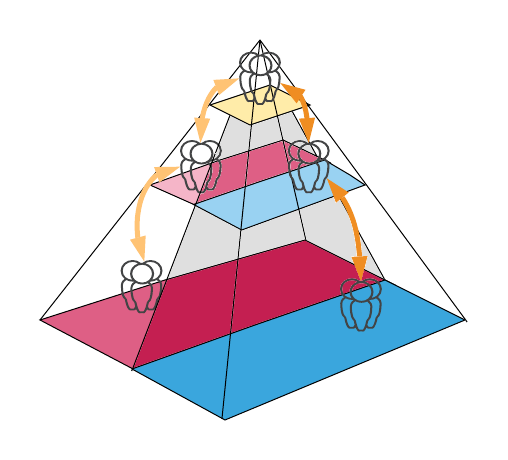

We want a high-trust culture whereby people can make decisions without consequence, even if they are wrong. It means no finger-pointing or witch-hunts when things go wrong. An environment where we make no mistakes is one stifled of innovation for fear of it not working. Mistakes are a necessary side-effect of experimentation. We learn more from mistakes than successes.
A considerable part of devops is the culture in which we deliver products. Organizations still operate in a rigid top-down pyramid. Strategy, policy, and instructions get pushed down from a few at the top to many at the bottom. Managers often make decisions without the necessary ‘coalface’ experience of day-to-day operations. At best, this slows progress as communication between one business area must flow up the pyramid and back down to another, even following the same route back. Occasionally it can be downright dangerous as people without operational experience approve or provide oversight to changes (the introduction of novemes) without the necessary context. It can create a false sense of security in change control but make problems more likely.
Devops requires a cultural shift from an organizational pyramid to a product-centric sub-organization with equality between stakeholders. Everyone within the product’s team is equal and a stakeholder. The goal is to increase flow by enabling people to do their job efficiently and without hindrance. Their job should be to create value for the product rather than repetitive tasks or menial workloads.
The self-organizing culture requires a managerial cultural shift above all others. There must be no micro-managing of people’s tasks. There must be no kowtowing to senior management, constantly changing immediate focus at a whim. We must empower people, usually within limits defined for them, to ‘get on with it.’ People must be able to make decisions for themselves about the work that they are doing. We must support them enough to encourage them to ask questions or request help without anyone seeing it as a failure.
We want a high-trust culture whereby people can make decisions without consequence, even if they are wrong. It means no finger-pointing or witch-hunts when things go wrong. An environment where we make no mistakes is one stifled of innovation for fear of it not working. Mistakes are a necessary side-effect of experimentation. We learn more from mistakes than successes.
When we look for the causes of mistakes, we are not looking for individuals that made them. We are looking for the cultural norms that allow them to happen, such as information and processes which fermented the problem to arise. Individuals do not cause issues. They arise from the culture, processes, and circumstances that led the individual to see the action as a promising idea leading up to it happening. The root cause is rarely, if ever, an individual decision. We need to look for a systemic context that allows issues to surface and then change our practice, policies, automation, and testing to prevent it from happening again.
When there is equality within the team, people are more likely to voice opinions highlighting areas of concern before encountering a problem. When everyone is a stakeholder, fostered in a culture of empowerment, they are more likely to be invested in positive outcomes rather than ticking off tasks. Effective DevOps is an excellent book that details which cultural patterns work in devops and anti-patterns to avoid.
Diversity in Teams
When we have a monoculture within our teams, we foster viewpoints that generally echo our own. Monocultures can adversely affect a product’s viability in the broader market. It means we are not taking a comprehensive enough view throughout the product lifecycle. We will be blinkered through design, implementation, and testing. It usually means that cultural and technical debt is already present in our product when we begin market testing. It will surface as waste and is expensive to address.
We should aim for as much diversity in our teams as possible and diversity broadly: (a)gender, ethnicity, (dis)ability, age, education, and experience. Our products will reflect that rich background by having all these backgrounds, making them equal, and empowering them to make decisions. We will increase their reach and desirability when we release novemes to the world.